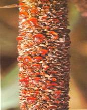
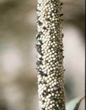

| Home |
| PEARLIMILLED |
MAJOR DISEASES |
| 1. Downy mildew |
| 2. Smut |
| 3. Rust |
| 4. Ergot or Sugary disease |
| Questions |
| Download Notes |
PEARLMILLED :: MAJOR DISEASE :: ERGOT OR SUGARY DISEASE
Ergot or Sugary disease - Claviceps fusiformis
Symptoms
The symptom is seen by exudation of small droplets of light pinkish or brownish honey dew from the infected spikelets. Under severe infection many such spikelets exude plenty of honey dew which trickles along the earhead. This attracts several insects. In the later stages, the infected ovary turns into small dark brown sclerotium which projects out of the spikelet.
|  |  |
Symptoms |
|
Pathogen
The pathogen produces septate mycelium which produces conidiophores and is closely arranged. Conidia are hyaline and one celled. The sclerotia are small (3-8mm x 0.3-15mm) and dark grey but white inside.
Disease cycle
Sclerotia are viable in soil for 6-8 months. The primary infection takes place by germinating sclerotia present in the soil. Secondary spread is by insects or airborne conidia. The role of collateral hosts like Cenchrus ciliarisand C. setigerusin perpetuation of fungus is significant. The fungus also infects other species of Pennisetum.
Management
- Adjust the sowing date so that the crop does not flower during September when high rainfall and high relative humidity favour the disease spread.
- Immerse the seeds in 10 per cent common salt solution and remove the floating sclerotia.
- Remove collateral hosts.
- Spray with Carbendazim 500g or Mancozeb 2 kg or Ziram 1kg/ha when 5-10 per cent flowers have opened and again at 50 per cent flowering stage.